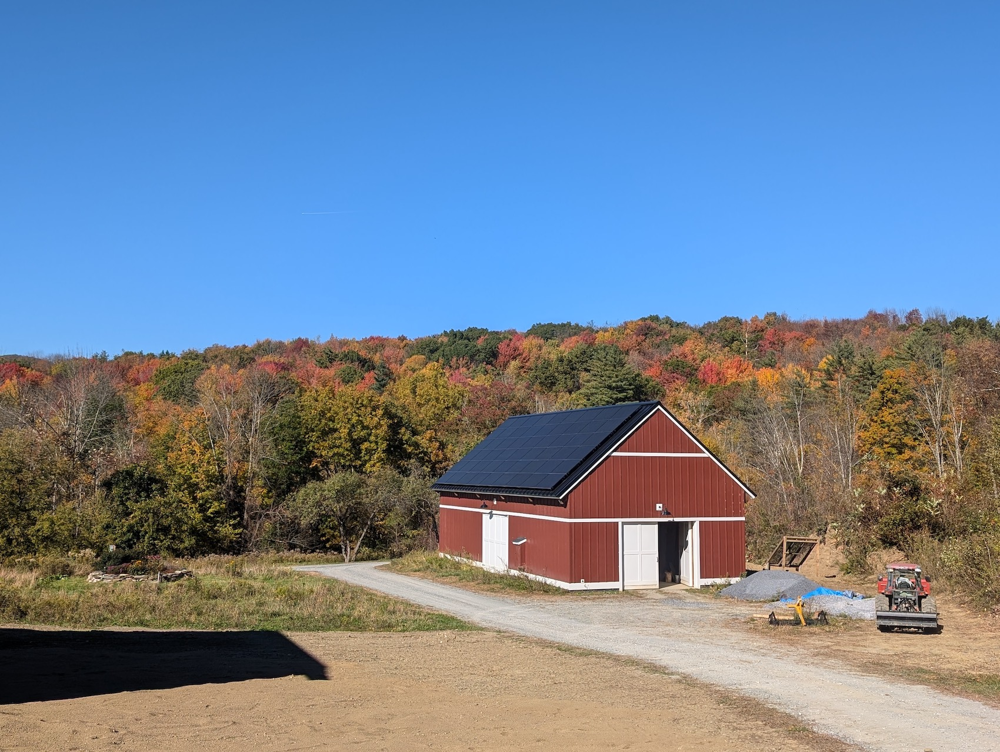

Can I bring other family members not listed on the invitation?
A: We want our wedding to stay small and intimate so we kindly ask that you do not bring additional people not listed on
the invitations, which includes children.
What is the wedding venue like?
A: Erik's parents (with the help of other family members) have been building a mountain escape for a couple years
now and we are very excited to use it for our wedding festivities. Weather dependent, the ceremony will be held in
a field with the mountains in the background. The reception dinner and dancing will be in the barn they have
built. The property includes acres of woods with trails. We are hoping to have a bonfire, too. We are renting
luxury restroom trailers for the weekend.

The reception venue under construction
What is the wedding dress code?
A: Semi-formal: this includes knee-length to maxi dresses, slacks, suits, and ties. Please no jeans, shorts, or
athleisure wear. Weather permitting, the ceremony will be held in a field with some uneven grass. If it rains,
there could be some mud. Therefore, we recommend being careful with heel height and niceness of shoes.
Temperatures in the evening can be cool so you likely want to bring a jacket.
Should I rent a car?
A: We recommend renting a car. Ride share options are very limited in the area. You can rent cars at both the
Albany and Boston airports from several rental car companies.
What food will be served at the wedding?
A: For dinner we will be having tacos, quesadillas, and toastada frijols with gluten free and vegan options.
Will alcohol be served?
A: We will be having margaritas (alcoholic and non-alcoholic) and a variety of beer, wine, hard seltzers, and
non-alcoholic drinks. Please include your preferences in your RSVP.
What is the address of the ceremony and Sunday brunch?
A: 948 Ladd Road, Pownal, VT.
What accessibility options are there at the venue?
A: Most guests will be asked to walk ~100 yards to the ceremony location on slightly uneven grass. We have a UTV
available to transport guests who need it. The rented luxury restroom trailers require a short set of steps to
access. Bathrooms are available inside the cottage or house on the property for guests who cannot access the
trailer restrooms.
Is camping allowed on the property?
A: Yes! If you would like to camp on the Kessler-Noren property, please let Erik or Kathryn know. There are spots
to set up reasonably-sized tents in the woods, but we cannot guarentee access to showers. The luxury restroom
trailers we are renting will be available all weekend and have sinks.
Please reach out Erik or Kathryn with any questions not answered above!